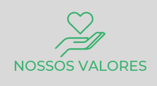

MOTIVAÇÕES
Democratizar o Acesso à Informação
Visibilizar projetos, em especial os novos, para proporcionar aumentos significativos às instituições e incentivar o engajamento do público.
Apliar as Vias de Doação Solidária
Instanciar meios de doação e assegurar a credibilidade transacional para que os usuários se sintam confiantes em contribuir.

NOSSOS VALORES

Ética e Transparência
O Ilumina valoriza o respeito a ética e uma comunicação aberta entre os membros da equipe e
com
usuários.
Confiança
A confiança é um dos pilares mais importantes para o Ilumina, compartilhando apenas
Instituições
confiáveis.
Evolução Constante
Em busca da melhora constante dos serviços, para continuar a oferecer o melhor serviço do
mercado.